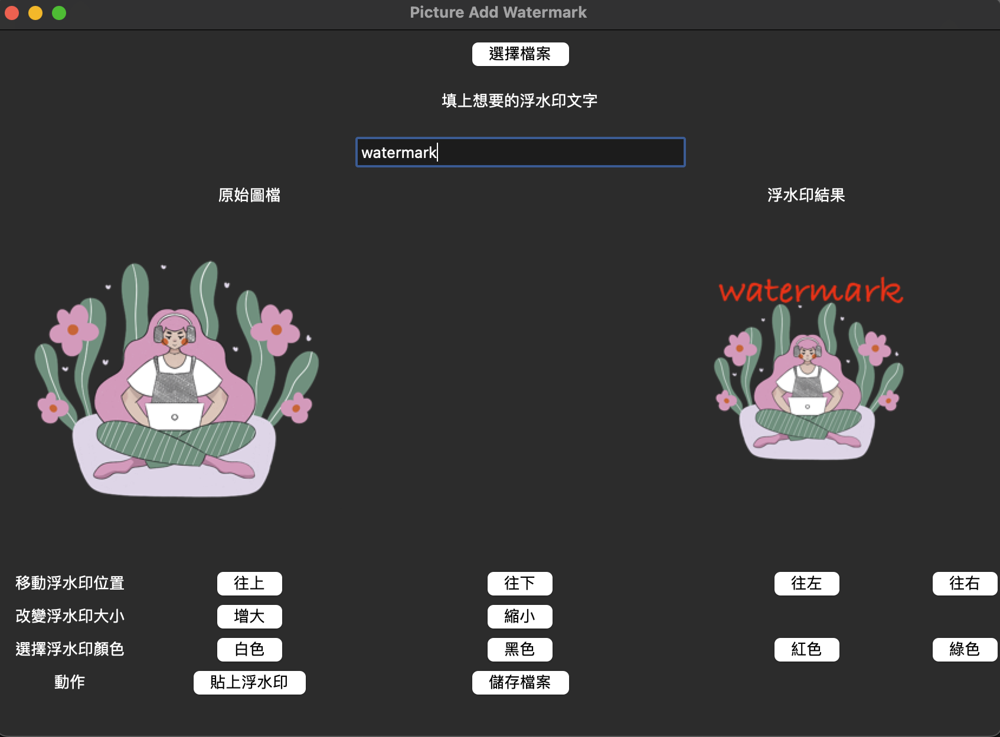
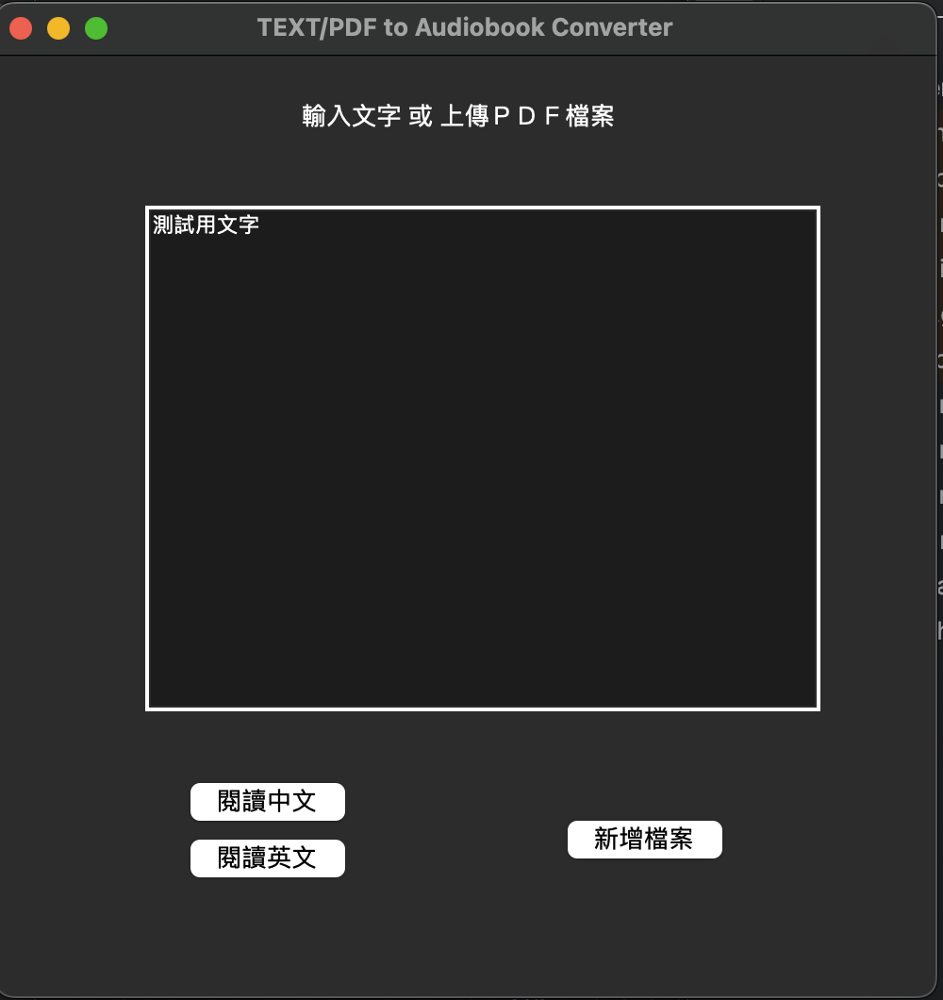
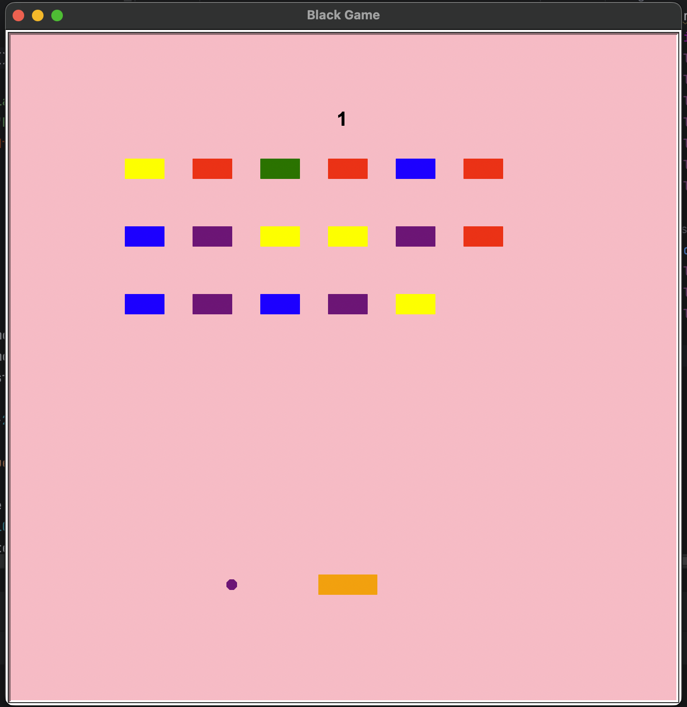
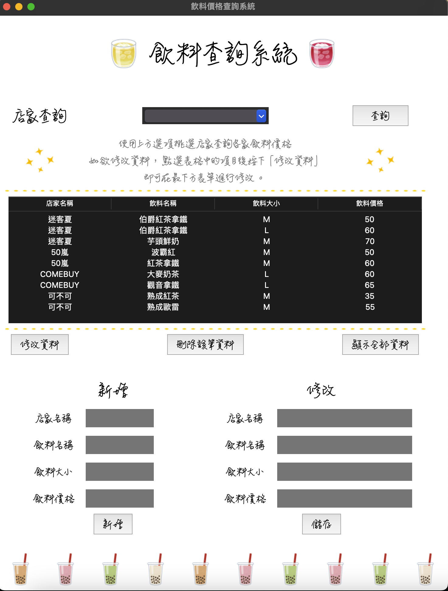
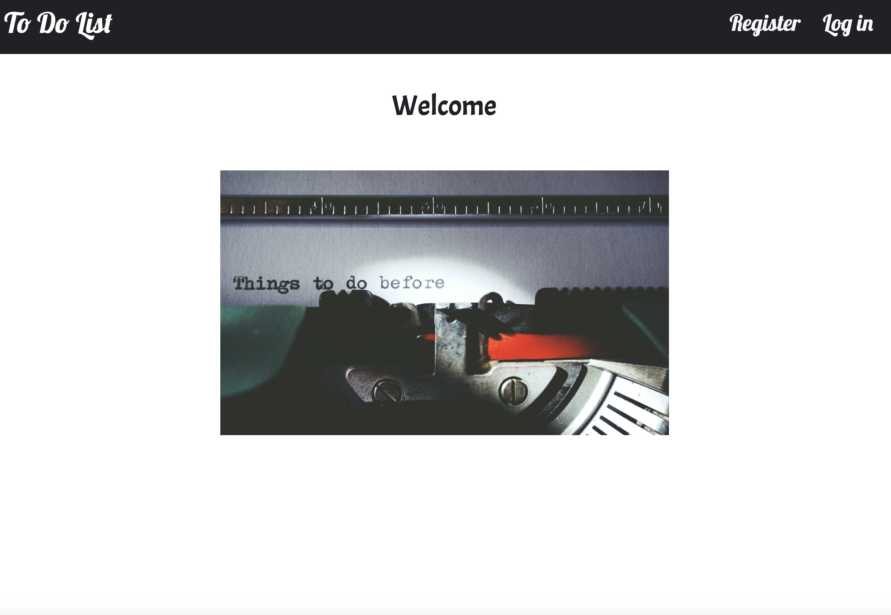
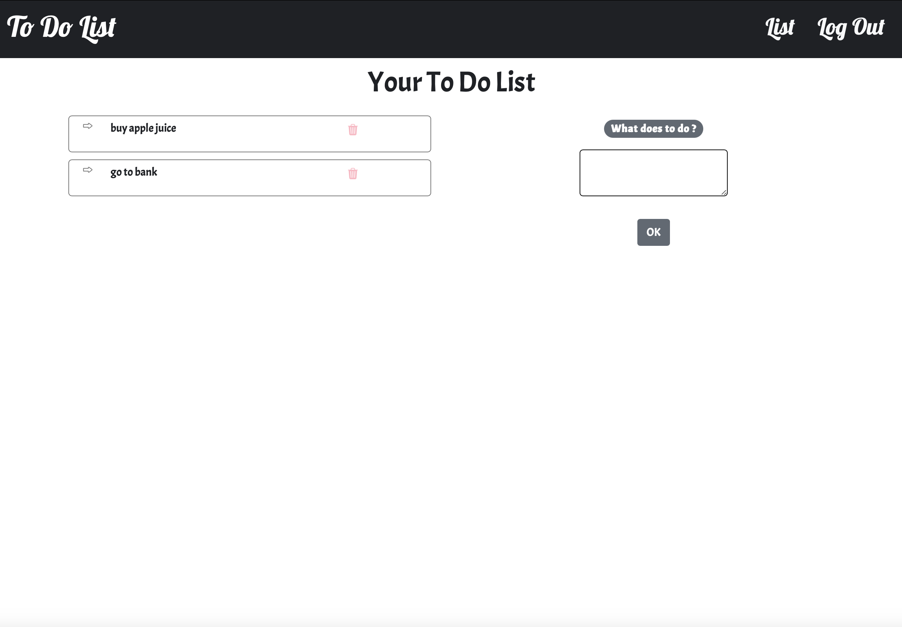
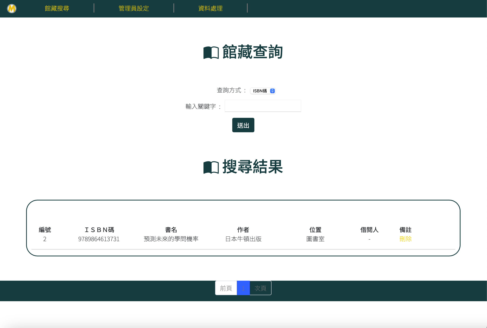
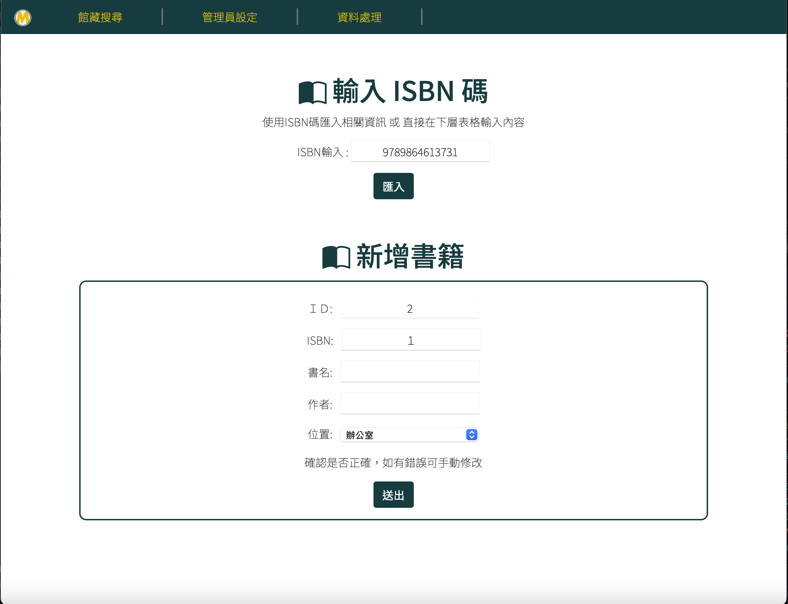
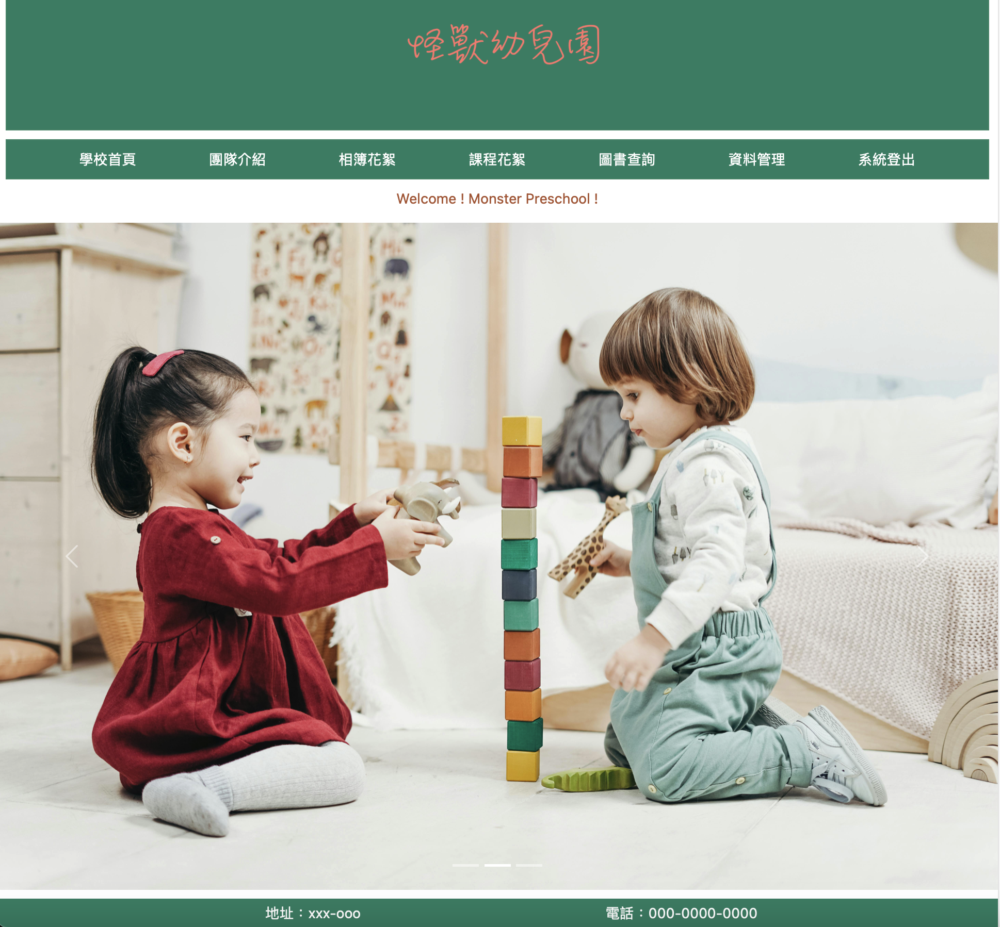
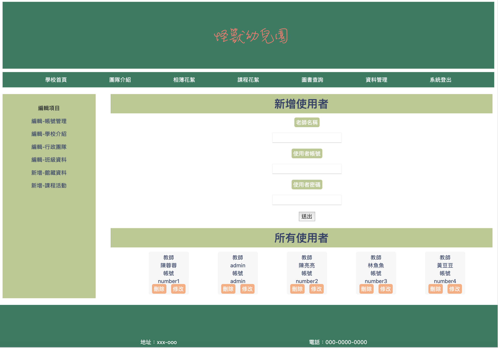

在開始自學程式語言之前，我曾查詢過多種學習方式，包括參加各類 Bootcamp 課程。發現許多課程以手把手教學或純知識傳授為主，但我也了解到網路上有豐富的學習資源，無論是付費還是免費，只要自律學習，就能找到適合的內容。因此，今年年初我決定透過網路資源自學程式語言。
學習至今，過程大致符合我預期。雖然透過課程我已經掌握了一些知識，但我認為需要更多專案實作經驗，才能真正熟練運用所學。WeHelp 的任務導向課程設計與未來的就業模式相符，我希望參與其中，進一步提升解決問題的能力，並強化技術應用。
此外，我非常欣賞 WeHelp 每週舉行的會議和進度報告設計，這不僅能提升進度控管能力，也能練習向他人分析、報告自己的工作進展。這些技能在自學過程中較難培養，但卻是工程師必備的能力之一。
最後，我也特別喜歡第二階段每週五的實體聚會，以及線上 Discord社群。能與一群志同道合、熱血奮鬥的夥伴共同努力，是自學難以獲得的寶貴經驗，也是我申請參加的原因之一。
為圖檔加上浮水印，並且可以設定文字、大小、方位與顏色。

輸入文字並選擇語言系統（中文或英文）進行語音朗讀的功能。

使用 Turtle 製作敲敲樂遊戲。

透過 Tkinter 和 MySQL，
讓使用者能新增與查詢飲料價格，比較不同店家的價格。

透過Flask、Sqlalchemy 設計出能夠紀錄代辦事項的網站。


使用 Flask 和 Google 圖書 API，
輸入 ISBN 即自動帶入書籍資訊，無資料時可手動輸入，
並提供學生借閱管理功能，簡化流程。


利用 Flask 框架設計，提供以下功能：


目前正值待業階段，我可以專注投入Bootcamp課程，學習重心會圍繞在課程中的實際任務與相關的知識。除了必要的日常作息，我會把可專注學習的時間優先分配給各項任務，並學習如何準確的規劃專案進度，即便遇到突發難題，也能動態調整自己的進度。
在學習的同時，我也希望探索未來轉職可能涉及的其他領域，將相關資源、資訊記錄在我的學習筆記中。當有餘力時便可進一步學習，即便暫時無法深入，也能為未來的自己提供參考和指引。
我覺得要確定投入的領域是正確且有回報的，除了要依靠對行業未來展望的判斷、分析，更關鍵的點是在於可否『持續適應變化』的這件事情上。軟體技術日新月異，不僅影響工程師這個行業，也改變了許多不同領域的工作模式。要在千變萬化的環境中獲得回報，重點是在於持續觀察世界的趨勢，迎接新挑戰，並靈活調整策略。
雖然沒有人能夠百分百的預測這個世界的走向，但只要保持開放心態、隨時注意這些技術的變化，也能注意到領域的變化隨之做出改變。且隨之改變、獲取新知的同時，也能新技術與舊經驗結合。即使選擇的是傳統行業，也能在其中找出新創點，就能持續創造價值。
以自己來說，離開幼教領域後，我認為自己過去的經驗與投入並未浪費。反而，學習程式時，我會想到未來可以設計適合幼兒園的互動軟體，這正是我的新舊知識結合的成果。只要不斷學習並持續地保持學習新知的心態，我相信所投入的領域將回報我更多成長與機會。
其實，我是一個能理性消化情緒的人。如果遇到不開心的事，我不會選擇跟他人起爭執，而是先讓自己冷靜下來，避免帶著情緒與人溝通。等冷靜後，我會去思考這些不開心的原因是哪些，再好好去與人溝通。
然而，當我擔任老師時，卻發現到自己很難維持這樣的狀態，我變得容易抱怨、經常生氣，甚至開始出現焦慮行為，這與過去的我完全不同。我意識到這種情緒狀態除了影響了自己，也開始影響到身邊的人，所以我知道我必須好好處理這件事情。 最一開始，我先是利用下班時間參加自己感興趣的課程，或前往健身房運動。這些活動在當下能讓我放鬆，短暫地感受到情緒的舒緩，也讓我恢復了一些活力。
然而，我發現自己仍經常陷於負面的情緒。於是，我花了一段時間分析原因。最後我意識到是因為這份工作讓我頻繁接觸到負面的環境和人事物，即時我在努力地調整心態，這些負面事件仍源源不絕地湧來，這已經不是我單方面努力能解決的問題，了解到這件事情後，我決定離開這個環境。
離職後，我的狀態明顯改善，這讓我確認自己的選擇是正確的。那段時間，我參加了短期課程，安排了海外旅行，讓自己徹底的放鬆。最後，我找回了平靜與快樂，我也知道我真的處理掉了負面情緒。
在製作申請網頁之前，我正好在練習HTML和CSS，如果只是大略的編排出物件的位置、版面的確是很容易的事情。但是要精確的使用標籤，卻不是那麼容易。對於CSS的用法，其實還是再查閱一些資訊才能夠處理得更漂亮。例如：要怎麼使用不同的標籤做出好看的作品排版、但會是因為不同標籤的特性，導致效果不如我預期、甚至某些元素無法顯示，這部分讓我花了不少時間進行調整。
除了網頁製作，有一部分的挑戰來自於我需要將練習作品上傳到GitHub。因為考慮會有一些無法運行的狀況，所以想再確認一次。結果我在進行確認時，的確有發生一些問題，在解決這些狀況時，我發現自己的程式碼寫得有些凌亂，變成我需要先花時間去理解我寫的內容，才能去解決我遇到的問題，那一瞬間，我真的更明白命名的重要性！如果變數名和函數名能夠直觀清楚，不僅能幫助自己快速理解，也能為之後的維護打下更好的基礎。
我覺得工作和社會群體的連結可以從兩個角度來看：一個是自己在工作中希望實現的目標如何影響社會，另一個則是社會需求如何反過來影響工作的方向。
在選擇工作時，通常會與自己的價值觀互相連結。例如，有人熱衷於環保，就可能會選擇積極推動環保的公司；而喜愛文化傳承的人，可能會投身於文創產業。同時，社會的變化也會對工作模式產生影響。像疫情期間，許多工作從實體轉為線上，這樣的改變至今仍然存在，並深刻影響著各行各業。
我認為這種雙向影響非常有趣也滿值得去探討的。雖然我不是從政者，很難透過發表政策產生直接的影響。但其實也是會透過自己的工作，一點一滴地對這個社會帶來改變。而這個社會也是會影響我自己工作的方向，社會的期許、轉變，都可能會讓我的工作隨之調整。
這次的報名對我來說也是一個特別的經驗，能夠整理自己的學習經歷並且展示出來，也能讓我思索更多自己的狀態。很喜歡你們設計的課程，期待未有機會能夠參加BootCamp！